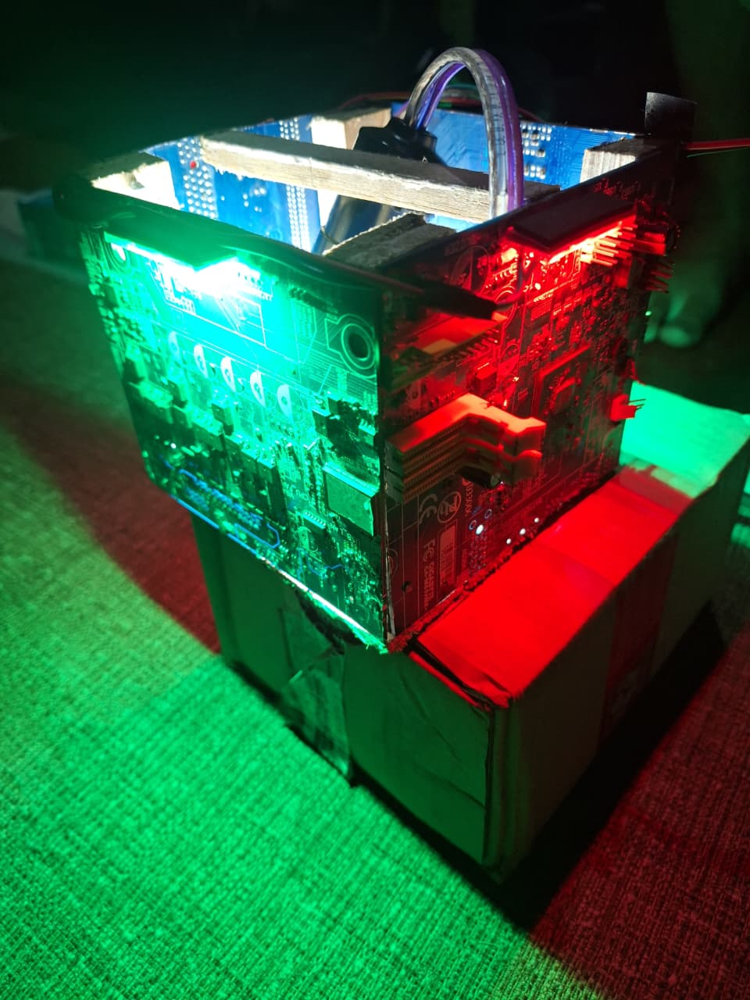
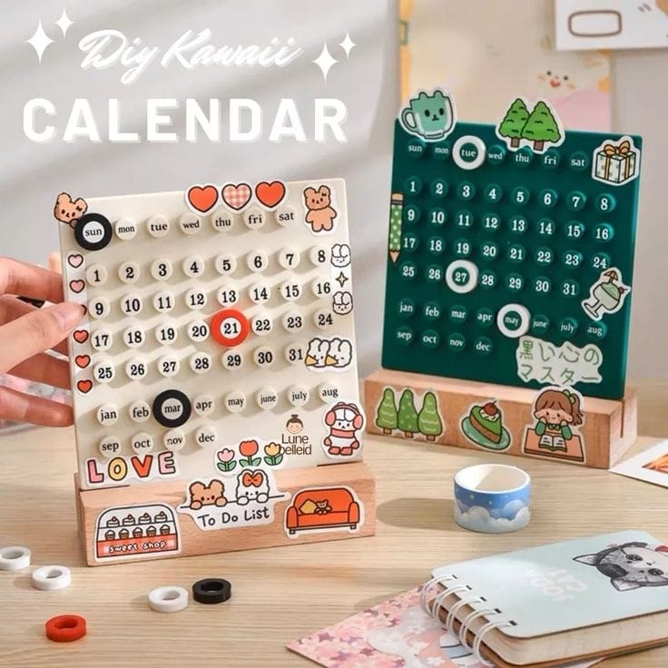
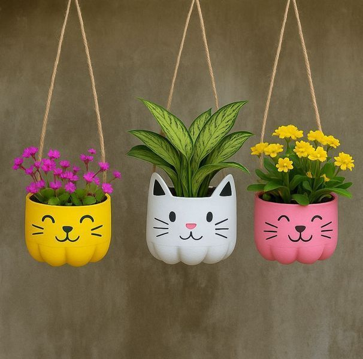
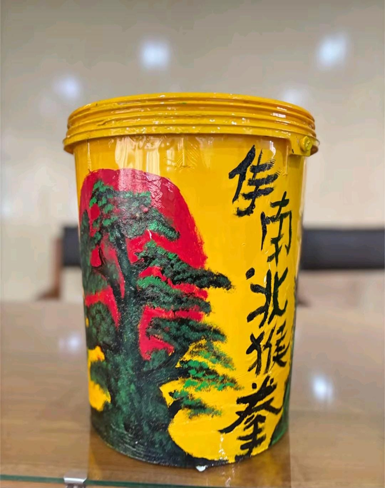

Permasalahan Limbah Elektronik
Perkembangan teknologi menyebabkan penggunaan perangkat komputer semakin meningkat. Namun, perangkat yang sudah tidak terpakai sering menjadi sampah elektronik. Motherboard bekas dapat mengandung material berbahaya yang berpotensi mencemari lingkungan apabila tidak dikelola dengan tepat.
Langkah menuju Solusi
Pengelolaan limbah elektronik dapat dimulai dari kebiasaan sederhana, pemanfaatan kembali barang bekas, serta dukungan terhadap teknologi yang ramah lingkungan.
Kelola dengan Bijak
Pisahkan sampah elektronik dan salurkan kepada tempat pengolahan yang tepat.
Bangun Kesadaran
Berikan edukasi tentang pentingnya menjaga lingkungan dari pencemaran limbah elektronik.
Manfaatkan Kembali
Ubah komponen motherboard yang masih layak menjadi barang kreatif dan memiliki nilai guna.
Dukung Inovasi Hijau
Kembangkan ide kreatif dan teknologi yang dapat mengurangi dampak pencemaran lingkungan.
Produk Kami
Kreativitas tanpa batas dari barang bekas. Temukan ide sederhana yang membawa perubahan.
Pendahuluan
Jelajahi berbagai inovasi unik yang mengubah sampah menjadi karya bernilai, sekaligus menginspirasi gaya hidup ramah lingkungan.
Eksplorasi
Lampu Hias Motherboard
Motherboard yang sudah rusak dapat dimanfaatkan menjadi lampu hias yang estetik dan futuristik.
EksplorasiKeychain dari Keyboard
Tombol keyboard bekas dipadukan dengan ring besi menjadi gantungan kunci yang unik dan bernilai jual.
Eksplorasi
Kalender dari Tutup Botol
Tutup botol disusun sebagai angka dan bulan pada papan triplek, lalu diberi warna agar terlihat menarik dan berwarna-warni.
Eksplorasi
Pot Bunga dari Galon Bekas
Badan galon dipotong dan dibentuk sebagai wadah tanaman, lalu dicat ulang agar terlihat lebih menarik, kuat, dan ramah lingkungan.
Eksplorasi
Tempat Sampah dari Ember Cat Bekas
Ember cat bekas disulap jadi tong sampah warna-warni yang estetik dan berguna untuk memilah sampah.
Eksplorasi
Tempat Alat Tulis dari Tutup Botol
Tutup botol bekas dapat dimanfaatkan menjadi tempat alat tulis. Tutup botol disusun dan direkatkan mengelilingi kaleng bekas, lalu dicat agar terlihat berwarna-warni dan kreatif.
EksplorasiMata Pelajaran
Bahasa Inggris
Membuat Explanation text.
How an Old Motherboard Is Transformed into a Decorative Lamp
Many old computers are thrown away every year because they are broken or outdated. One of the parts that is often wasted is the motherboard. Although it can no longer be used in a computer, a motherboard still has a unique shape, pattern, and color. By using creativity, this electronic waste can be transformed into a decorative lamp. This process shows that waste does not always have to end in a trash bin.
The transformation begins by taking the motherboard out of the old computer casing. It is then cleaned from dust and unnecessary cables to make it look neat. After cleaning, the motherboard is checked to make sure there are no sharp or dangerous parts. At this stage, the motherboard changes its role from a machine controller to a material for art and decoration.
The motherboard is then combined with a lamp base, LED lights, and a small power cable to form a new product. The LED lights are placed in the middle so that the light can highlight the lines and chips on the motherboard. Through arranging and fixing the parts together, the motherboard becomes the main body of the lamp. Once all parts are connected correctly, the lamp can be turned on and used.
As a result, the old motherboard becomes a decorative lamp with a modern and futuristic style. This lamp is not only useful for lighting, but also for beautifying a room. It shows that electronic waste can still have value if it is processed creatively. Therefore, making a lamp from a motherboard is a good example of how recycling can help protect the environment.
How an Old Motherboard Is Transformed into a Decorative Lamp
The increasing use of computers produces a large amount of electronic waste. When a computer breaks down, its motherboard is usually thrown away even though it still has an interesting shape and structure. However, this waste can be processed into something valuable. One creative idea is to change an old motherboard into a decorative lamp. This idea proves that useless electronic waste can be given a second life.
The process starts by removing the motherboard from the old computer and cleaning it carefully. Dust, cables, and other dirt are removed so the surface looks clean and neat. After that, the motherboard is cut or shaped according to the lamp design. At this stage, the motherboard no longer functions as a computer part, but as the main material for decoration.
Next, the motherboard is attached to a lamp frame with glue and screws. LED lights are placed behind or inside the motherboard so the light shines through its circuits. The combination of light and electronic patterns creates a modern and unique look. After all parts are installed and tested, the lamp is ready to be used as a room decoration.
Finally, the old motherboard becomes a decorative lamp that is both useful and attractive. It can be placed on a study table or in a bedroom to give a warm and technological atmosphere. Besides reducing electronic waste, this product also trains creativity and care for the environment. Therefore, transforming a motherboard into a lamp is a smart way to turn waste into art.
How an Old Motherboard Is Transformed into a Decorative Lamp
Electronic waste is one of the environmental problems caused by the rapid development of technology. Old motherboards are often discarded when computers are damaged or no longer used. However, these motherboards contain components that can still be reused. One creative way to manage this waste is by transforming an old motherboard into a decorative lamp. This transformation shows how electronic waste can become a useful and valuable product.
The transformation begins when an unused motherboard is separated from other computer components. The motherboard is then cleaned to remove dust and dirt. At this stage, the original function of the motherboard changes. Instead of being used to control a computer system, it becomes a decorative material for a new product.
The cleaned motherboard is combined with a lamp frame, LED light, and cable to create a new object. Through the process of cutting, arranging, and attaching, the motherboard is formed into the body of the lamp. Its circuits and electronic components create a unique and futuristic appearance. Once the materials are firmly attached and the LED is installed, the separate components become one complete lamp product.
As a result, an old motherboard is transformed into a decorative lamp that has both functional and aesthetic value. The product can be used to light a room while also serving as a creative decoration. This transformation reduces the amount of electronic waste and encourages the reuse of available materials. Therefore, recycling computer components into decorative products is one way to support a more sustainable environment.
Matematika
Membuat Flayer Iklan Bundling Produk

Hasil Perhitungan Nisa
Misalkan
Permodelan
Penyelesaian
Eliminasi
3x + y = 400.000 × 2
x + 2y = 550.000 × 1
---------------------
6x + 2y = 800.000
x + 2y = 550.000
---------------------
5x = 250.000
x = 250.000
-----------
5
X = 50.000
Substitusi
3x + y = 400.000
3(50.000) + y = 400.000
150.000 + y = 400.000
y = 400.000 - 150.000
y = 250. 000

Hasil Perhitungan Shouma
Misalkan
Permodelan
Penyelesaian
Eliminasi y
x + 2y = 585.000 × 3
2x + 3y = 920.000 × 2
3x + 6y = 1.755.000
4x + 6y = 1.840.000
------------------- −
−x = −85.000
x = 85.000
Substitusi
x + 2y = 585.000
85.000 + 2y = 585.000
2y = 585.000 - 85.000
2y = 500.000
y = 500.000/2
y = 250.000

Hasil Perhitungan Al Mela
Misalkan
Permodelan
Penyelesaian
Eliminasi x
2x + 3y = 465.000 x 1
x + 2y =280.000 x 2
-------------------
2x + 3y = 465.000
2x + 4y = 560.000
------------------- −
-y = -95.000
y = 95.000
Substitusi
x + 2y = 465.000
x + (2x95.000) = 280.000
x + 190.000 = 280.000
x = 280.000-190.000
x = 90.000